CO5085 · Học sâu và ứng dụng trong thị giác máy tính · HK261 (2026–2027)
A2 — Phân đoạn ngữ nghĩa trên Pascal VOC 2012: SegFormer so với DeepLabV3+
Nhóm: Trần Hoài Tâm (một thành viên) · MSHV 2470743 · Giảng viên: Lê Thành Sách, Nguyễn Quốc Minh
Trang chung · E1–E3 · A1 · A2
Chủ đề đã chọn
Phân đoạn ảnh (semantic segmentation)
Chủ đề 1 của đề A2 · metric chính: mIoU, kèm Dice
Paper được phân tích
SegFormer
E. Xie, W. Wang, Z. Yu, A. Anandkumar, J. M. Alvarez, P. Luo. SegFormer: Simple and Efficient Design for Semantic Segmentation with Transformers. NeurIPS 2021. arXiv:2105.15203
Dataset
Pascal VOC 2012 + SBD
21 lớp · 10.082 train / 500 minival / 1.449 val
Kết quả chính
SegFormer-B2 (tự cài đặt)
79,93%
mIoU trên VOC 2012 val · hơn DeepLabV3+ R50 4,25 điểm, CI 95% [+2,90; +5,68]
DeepLabV3+ ResNet-50
75,67%
cùng ~27 triệu tham số, cùng công thức huấn luyện · nhanh hơn khi suy luận (59 so với 36 FPS)
ResNet-50 + decoder MLP
69,16%
cùng decoder của SegFormer nhưng encoder CNN: kém SegFormer-B2 10,8 điểm, đúng như Bảng 1d của paper
Độ bền với nhiễu ảnh
85% so với 68%
mIoU giữ lại trung bình trên 27 điều kiện nhiễu: SegFormer-B2 so với DeepLabV3+ R50
1. Bài toán và tập dữ liệu (EDA)
Phân đoạn ngữ nghĩa gán cho mỗi pixel một trong 21 lớp (20 lớp đối tượng và nền). Pascal VOC 2012 chỉ có 1.464 ảnh train có nhãn phân đoạn, nên bài tập ghép thêm SBD (Hariharan và cộng sự, 2011) để có tập "train_aug" quen thuộc gồm 10.582 ảnh. Cả hai được tải từ máy chủ chính thức và chỉ dùng cho mục đích học tập.
- Split: 10.082 train / 500 minival (tách từ train_aug, chỉ để vẽ đường học) / 1.449 ảnh VOC 2012 val làm tập kiểm tra. 1.103 ảnh của SBD trùng với VOC val đã bị loại khỏi tập huấn luyện. Không chọn checkpoint: mỗi run được chấm một lần bằng trọng số cuối.
- Mất cân bằng lớp: nền chiếm 69,3% số pixel, person 7,8%, mỗi lớp còn lại chỉ 0,5–3,3%. Vì vậy dùng mIoU thay cho pixel accuracy.
- Ảnh hướng đối tượng: trung bình 1,47 lớp đối tượng mỗi ảnh, đối tượng chiếm 30% diện tích. Khác hẳn ADE20K/Cityscapes mà paper dùng.
- Hai nguồn nhãn không đồng nhất: nhãn VOC có viền void và bám sát chi tiết; nhãn SBD (86% ảnh train) không có void và đường biên thô hơn. Trên 1.080 ảnh có cả hai, hai bộ nhãn trùng nhau 97,2% số pixel.
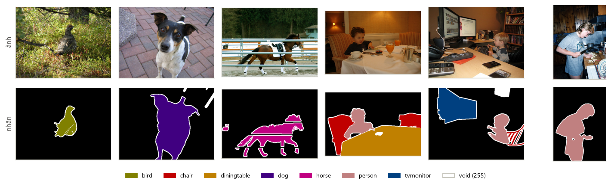
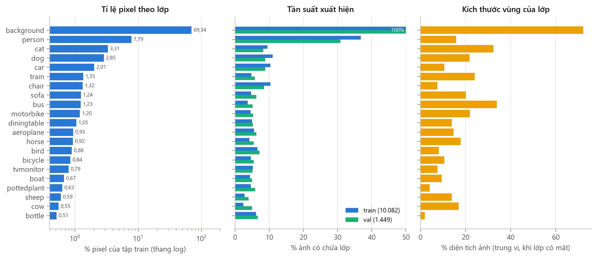
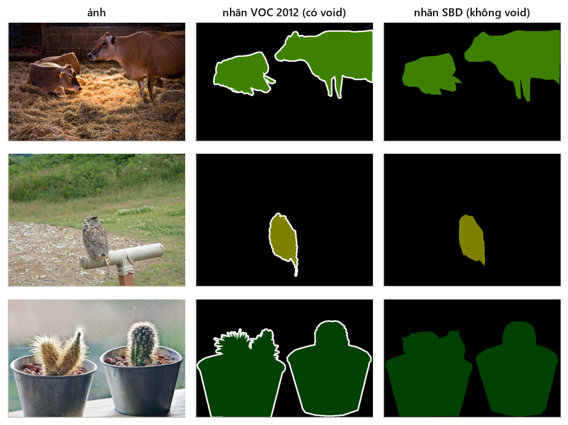
2. Dataset, DataLoader, augmentation
src/data.py: ảnh có kích thước khác nhau nên được giải mã và augment trên CPU bởi 6 worker thường trực; sampler vô hạn vì lịch huấn luyện tính theo vòng lặp. Augmentation theo đúng công thức của paper SegFormer, áp dụng đồng thời cho ảnh và nhãn:
- Co giãn ngẫu nhiên tỉ lệ 0,5–2,0 (ảnh: bilinear, nhãn: nearest).
- Đệm và cắt ngẫu nhiên 512×512; phần đệm mang nhãn void nên không vào loss.
- Lật ngang (p = 0,5) và biến đổi màu (độ sáng, tương phản, bão hoà, sắc độ).
- Chuẩn hoá mean/std ImageNet. Khi đánh giá: chỉ đệm lên 512×512, suy luận single-scale cả ảnh.
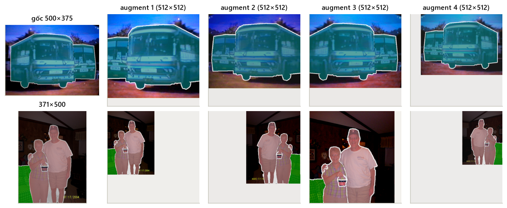
3. Phân tích paper SegFormer
Phương pháp
- Encoder phân cấp MiT: bốn stage cho đặc trưng ở độ phân giải 1/4, 1/8, 1/16, 1/32, thay cho đặc trưng một tỉ lệ của ViT.
- Overlapped patch merging: giảm độ phân giải bằng tích chập có kernel lớn hơn bước nhảy (7/4 rồi 3/2), giữ tính liên tục giữa các patch.
- Efficient self-attention: rút ngắn chuỗi khoá/giá trị R = 64, 16, 4, 1 lần ở bốn stage, đưa chi phí từ O(N²) về O(N²/R).
- Mix-FFN: một tích chập depth-wise 3×3 giữa hai lớp tuyến tính của FFN thay cho positional encoding; phần đệm số 0 làm lộ thông tin vị trí.
- Decoder chỉ gồm MLP: chiếu bốn đặc trưng về cùng C kênh, phóng về 1/4, nối lại, trộn bằng một lớp tuyến tính rồi phân loại. Loss chỉ là cross-entropy.
Thí nghiệm và kết luận của paper
Paper thử trên ADE20K, Cityscapes và COCO-Stuff (mIoU, tham số, FLOPs, FPS). SegFormer-B0 với 3,8 triệu tham số đạt 37,4% trên ADE20K, hơn DeepLabV3+ MobileNetV2 (34,0%); SegFormer-B5 đạt 51,8% trên ADE20K và 84,0% trên Cityscapes, hơn SETR dù nhỏ hơn khoảng 4 lần. Các ablation cho thấy: encoder càng lớn càng tốt; decoder không cần rộng; Mix-FFN bền với thay đổi độ phân giải hơn positional encoding; decoder MLP chỉ hiệu quả với encoder Transformer; SegFormer bền với nhiễu ảnh hơn hẳn DeepLabV3+.
Hạn chế
- Phụ thuộc pretraining ImageNet-1k của một backbone mới; paper không có thí nghiệm huấn luyện từ đầu.
- "Decoder nhẹ" chỉ đúng về số tham số: bước nối 4C kênh ở độ phân giải 1/4 rất tốn FLOPs và bộ nhớ.
- So sánh với CNN không kiểm soát chặt kích thước và công thức huấn luyện; phân tích receptive field chỉ định tính.
- Chỉ thử trên dữ liệu phân tích cảnh, không có dữ liệu hướng đối tượng như VOC; không có metric cho đường biên.
Phần đối chiếu từng nhận định với thí nghiệm của bài tập nằm ở Mục 5.
4. Pipeline, huấn luyện, so sánh phương pháp
Tự cài đặt. SegFormer (MiT + decoder MLP) và DeepLabV3+ (ASPP + decoder) được viết lại bằng PyTorch trong src/models.py; chỉ ResNet-50 lấy từ timm. Bản SegFormer nạp được checkpoint chính thức với strict=True và cho nhãn trùng với bản tham chiếu của thư viện transformers ở ít nhất 99,99% số pixel (scripts/verify_segformer.py).
Decoder gộp. Cài đặt đúng theo paper, decoder của B2 tạo tensor 3.072 kênh ở độ phân giải 1/4 và vượt 6 GB khi huấn luyện (7,2 GB). Vì chiếu, nội suy và trộn đều tuyến tính, có thể gộp hai ma trận của mỗi stage thành một tích chập 1×1 rồi cộng các kết quả đã phóng: kết quả không đổi, bộ nhớ còn 4,7 GB và GMACs giảm từ 60,7 xuống 22,7.
Protocol (giống nhau cho mọi run có pretrain): AdamW, learning rate 6e-5 cho encoder và 6e-4 cho decoder, weight decay 0,01, warmup 500 vòng lặp rồi lịch poly, 10.000 vòng lặp với batch 8 (≈ 7,9 epoch), cắt 512×512, cross-entropy, bfloat16, seed 42. Phần cứng: RTX 3050 Laptop 6 GB.
| Mô hình | Pre-train | mIoU (%) | mDice (%) | Boundary mIoU (%) | Tham số (M) | GMACs | FPS | Train (phút) | Mem (GB) |
|---|---|---|---|---|---|---|---|---|---|
| DeepLabV3+ R50 | IN-1k | 75,67 | 84,97 | 67,30 | 26,7 | 37,7 | 59 | 66 | 3,9 |
| ResNet-50 + MLP | IN-1k | 69,16 | 80,48 | 60,73 | 28,8 | 29,9 | 52 | 72 | 4,1 |
| SegFormer-B0 | IN-1k | 69,57 | 80,63 | 58,17 | 3,7 | 3,6 | 106 | 29 | 1,9 |
| SegFormer-B1 | IN-1k | 75,63 | 84,93 | 64,70 | 13,7 | 11,1 | 72 | 40 | 2,8 |
| SegFormer-B2 | IN-1k | 79,93 | 87,77 | 70,15 | 27,4 | 22,7 | 36 | 79 | 4,9 |
| SegFormer-B0 (scratch) | – | 19,51 | 28,08 | 13,30 | 3,7 | 3,6 | 107 | 29 | 1,9 |
VOC 2012 val, 1.449 ảnh, single-scale; in đậm: mIoU cao nhất. Boundary mIoU: chỉ tính trên dải 8 pixel quanh đường biên của nhãn thật. GMACs cho ảnh 512×512; FPS với batch 1; thời gian và bộ nhớ khi huấn luyện batch 8.
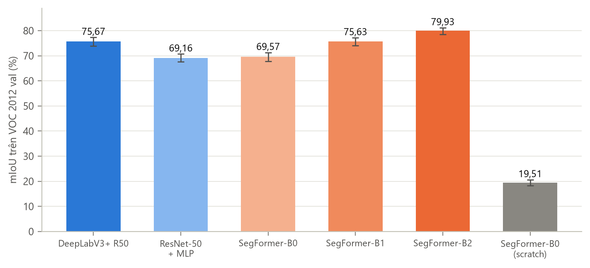
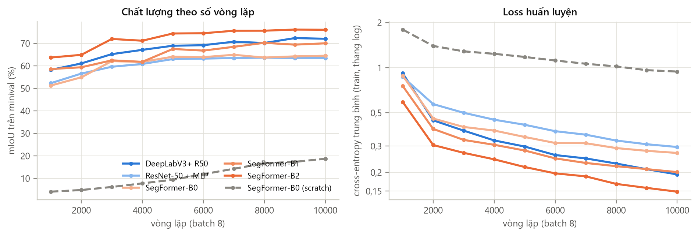
5. Kết quả, thảo luận, hạn chế
SegFormer-B2 so với DeepLabV3+ ResNet-50 (cùng ~27 triệu tham số)
- SegFormer-B2 hơn 4,25 điểm mIoU, CI 95% [+2,90; +5,68] (bootstrap ghép cặp trên 1.449 ảnh), và tốt hơn ở 20/21 lớp. Năm lớp khó nhất của cả hai: bicycle, chair, sofa, diningtable, pottedplant.
- Lỗi chủ đạo là bỏ sót đối tượng thành nền (7,9% pixel đối tượng với B2), không phải nhầm giữa các lớp. SegFormer-B2 ít nhầm lớp hơn hẳn: bus → train giảm từ 6,0% xuống 0,1%, cow → horse từ 5,2% xuống 0,5%.
- SegFormer thắng nhờ gán đúng lớp cho cả vùng, không phải nhờ đường biên. SegFormer-B1 và DeepLabV3+ có cùng mIoU (75,63 và 75,67), nhưng trên dải 8 pixel quanh đường biên DeepLabV3+ hơn 2,6 điểm.
- FLOPs không dự đoán được tốc độ. B2 cần ít phép tính hơn (22,7 so với 37,7 GMACs) nhưng chậm hơn trên RTX 3050 (36 so với 59 FPS). SegFormer-B1 là điểm cân bằng tốt nhất: cùng mIoU với DeepLabV3+, một nửa số tham số, 72 FPS.
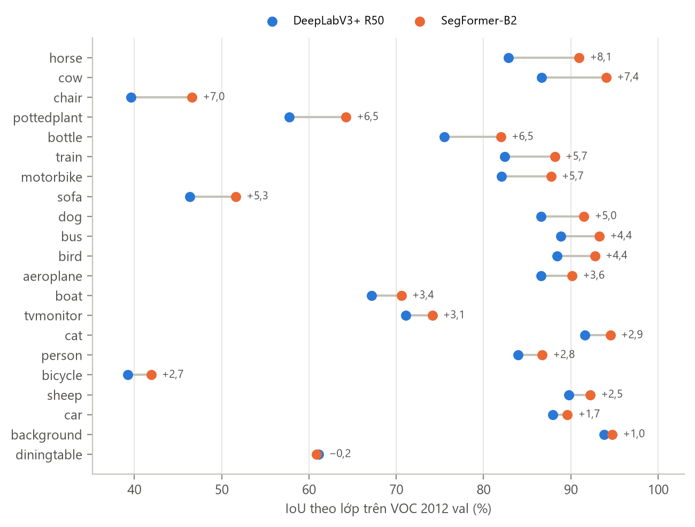
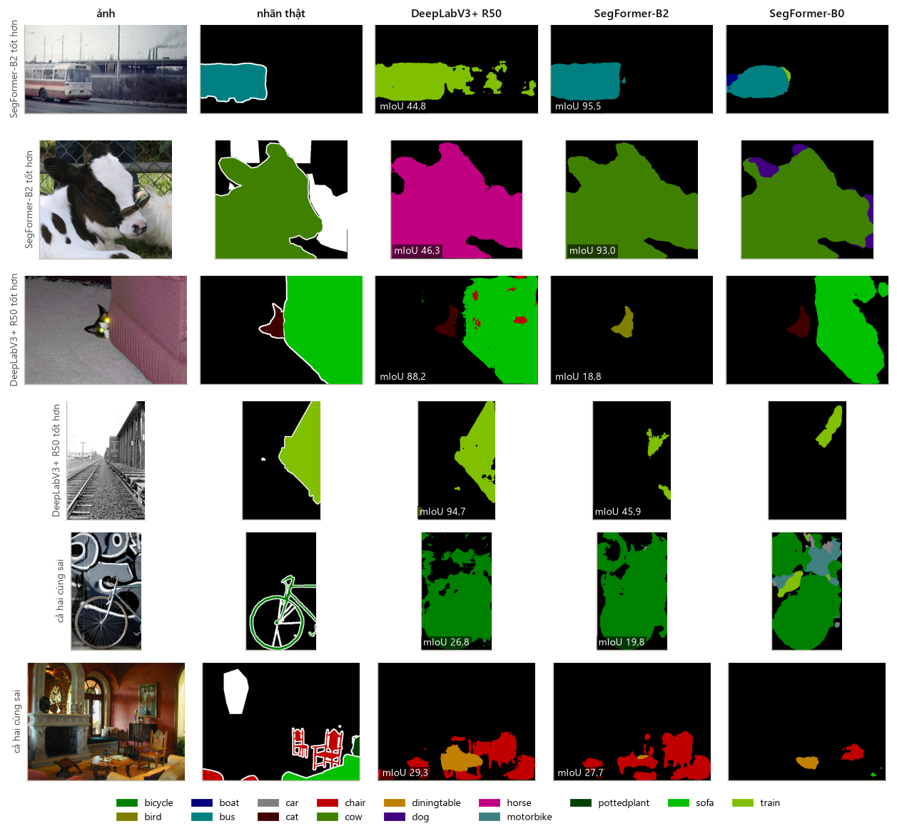
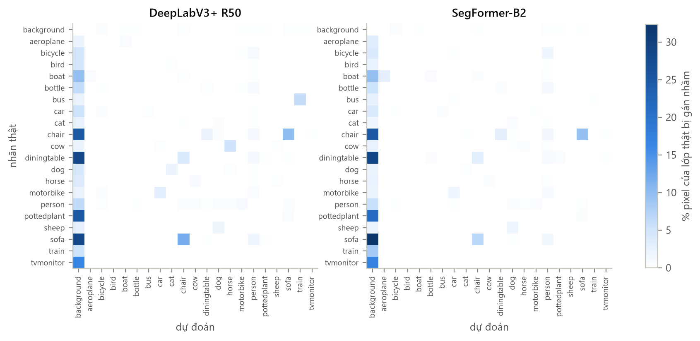
Đối chiếu các nhận định của paper với thí nghiệm trên VOC
| Nhận định của paper | Thí nghiệm của bài tập | Đánh giá |
|---|---|---|
| SegFormer chính xác hơn CNN cùng cỡ | B2 hơn DeepLabV3+ R50 4,25 điểm | Tái hiện được |
| Mô hình nhỏ đạt độ chính xác của CNN lớn hơn | B1 (13,7 triệu) ngang DeepLabV3+ (26,7 triệu): chênh +0,04 điểm, CI [−1,48; +1,54] | Tái hiện được với B1 |
| Encoder lớn hơn thì tốt hơn (Bảng 1a) | B0 → B1 → B2: +6,06 và +4,29 điểm (paper: +4,8 và +4,3 trên ADE20K) | Tái hiện được |
| Decoder MLP cần encoder Transformer (Bảng 1d) | ResNet-50 + MLP kém MiT-B2 + MLP 10,8 điểm (paper: 10,7) | Tái hiện được, cùng độ lớn |
| ERF của MiT lớn, của CNN nhỏ (Hình 3) | 90% gradient của decoder nằm trong 227 px (ResNet-50 + MLP), 461 px (DeepLabV3+), 473 px (B2) | Tái hiện và định lượng được |
| Bền với nhiễu ảnh (Bảng 5) | Giữ 85% mIoU (B2) so với 68% (DeepLabV3+); B1 hơn DeepLabV3+ 8,0 điểm dù cùng mIoU gốc | Tái hiện được; ở nhóm mờ lợi thế nhỏ |
| Bền với độ phân giải (Bảng 1c) | B2 và DeepLabV3+ thay đổi gần như nhau từ 0,5× đến 1,5× | Một phần: không hơn CNN |
| Hiệu quả tính toán, decoder nhẹ | Decoder nguyên bản của B2 cần 7,2 GB; B2 chậm hơn DeepLabV3+ khi suy luận | Một phần |
| Dùng encoder pretrain ImageNet-1k | Không pretrain: 19,51% so với 69,57% | Pretraining là bắt buộc |
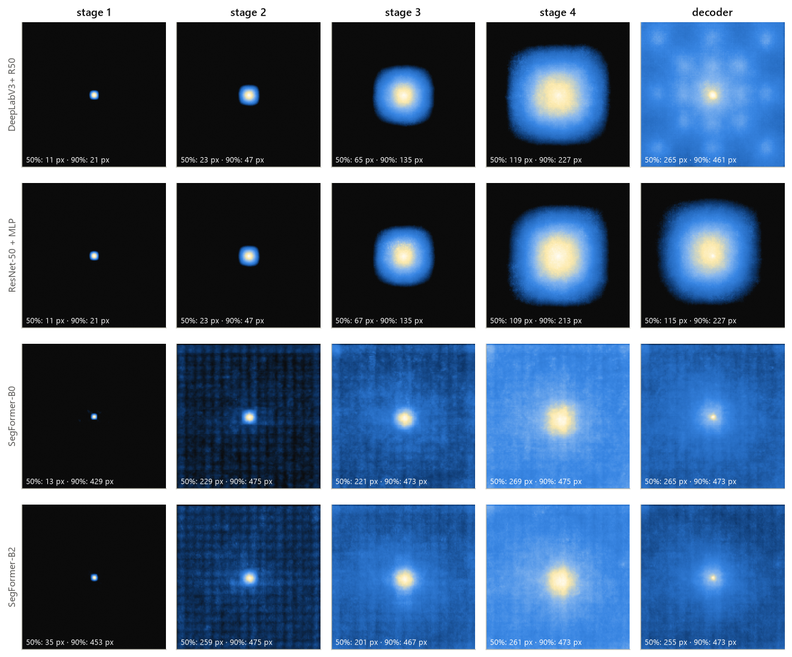
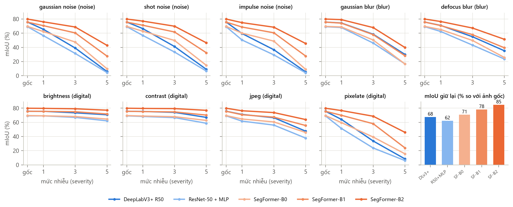
| Mô hình | Ảnh gốc | Nhiễu (noise) | Mờ (blur) | Digital | Trung bình 27 điều kiện | Giữ lại (%) |
|---|---|---|---|---|---|---|
| DeepLabV3+ R50 | 75,67 | 36,52 | 54,00 | 60,65 | 51,13 | 67,6 |
| ResNet-50 + MLP | 69,16 | 30,34 | 43,31 | 52,43 | 43,04 | 62,2 |
| SegFormer-B0 | 69,57 | 40,49 | 46,05 | 57,29 | 49,19 | 70,7 |
| SegFormer-B1 | 75,62 | 53,43 | 54,70 | 65,69 | 59,16 | 78,2 |
| SegFormer-B2 | 79,93 | 63,29 | 63,64 | 73,13 | 67,74 | 84,8 |
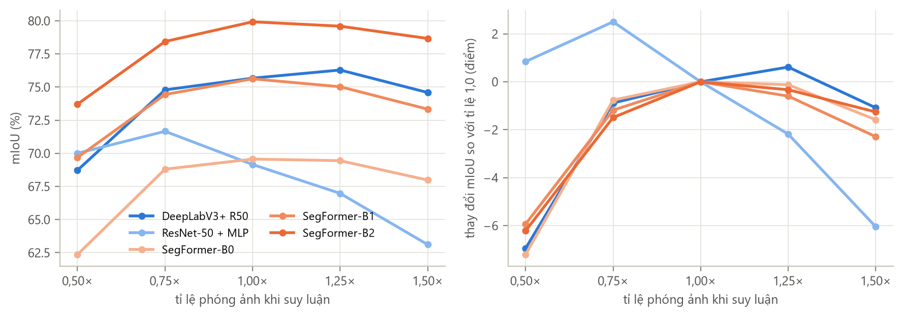
Hạn chế
- Mỗi cấu hình chạy một seed; khoảng tin cậy bootstrap chỉ đo nhiễu của tập kiểm tra.
- Lịch huấn luyện ngắn (10.000 vòng lặp, ít hơn 32 lần số mẫu so với paper), nên con số tuyệt đối là cận dưới.
- Công thức huấn luyện của paper (AdamW) được áp cho cả CNN, không tinh chỉnh riêng; hai run ResNet-50 còn khác nhau ở output stride.
- Thí nghiệm nhiễu là bản rút gọn (9 loại, tự cài đặt theo tham số ImageNet-C); chưa tái hiện ablation về positional encoding.
Chi tiết đầy đủ trong báo cáo PDF (Mục 6–8).
Demo
scripts/demo.py phân đoạn một ảnh bất kỳ bằng các mô hình đã huấn luyện và lưu hình so sánh kèm thời gian suy luận. Các ví dụ dưới đây là ảnh VOC 2012 val (mô hình chưa từng thấy khi huấn luyện), được chọn theo nhãn chứ không theo kết quả: ảnh đầu tiên của mỗi lớp.
python -m scripts.demo --images anh_cua_ban.jpg
python -m scripts.demo --val-classes aeroplane bicycle bus cat dog person sofa train --out demo --gif demo/demo.gif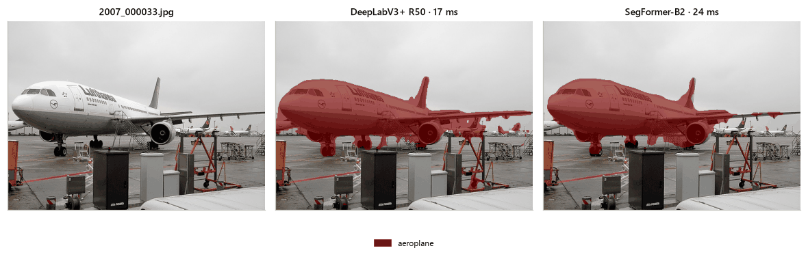
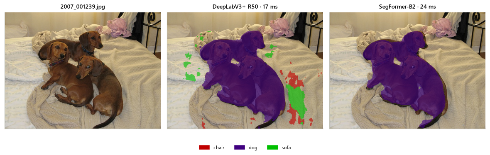
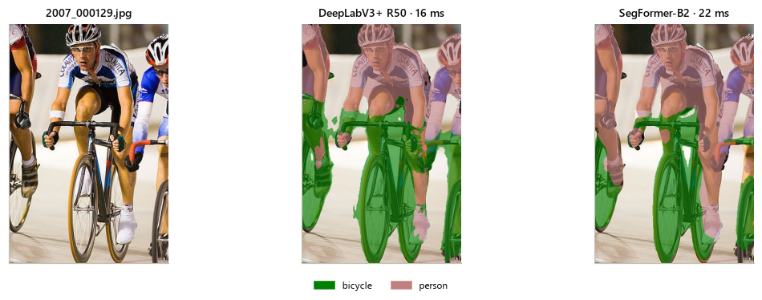
Tái lập
pip install -r requirements.txt --extra-index-url https://download.pytorch.org/whl/cu124
python -m scripts.prepare_data # tải VOC 2012 + SBD, tạo split
python -m src.eda # thống kê + hình EDA
python -m scripts.run_all # 6 cấu hình (bỏ qua run đã xong, resume run dở)
python -m src.erf # effective receptive field
python -m src.robustness # nhiễu ảnh và độ phân giải
python -m src.analyze # bảng tổng hợp, kiểm định, hình
python -m scripts.build_report # báo cáo PDF
python -m scripts.demo --images anh_cua_ban.jpg